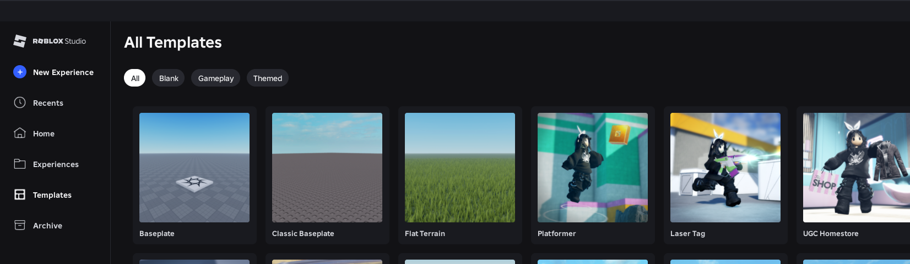
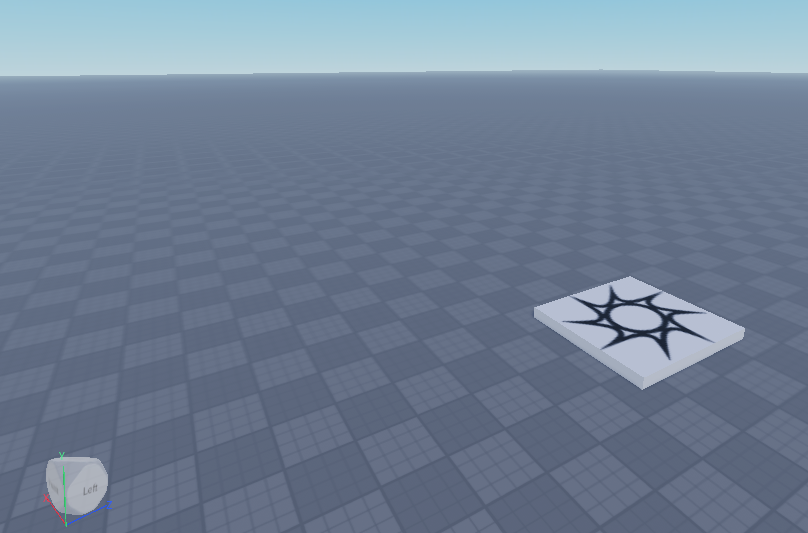
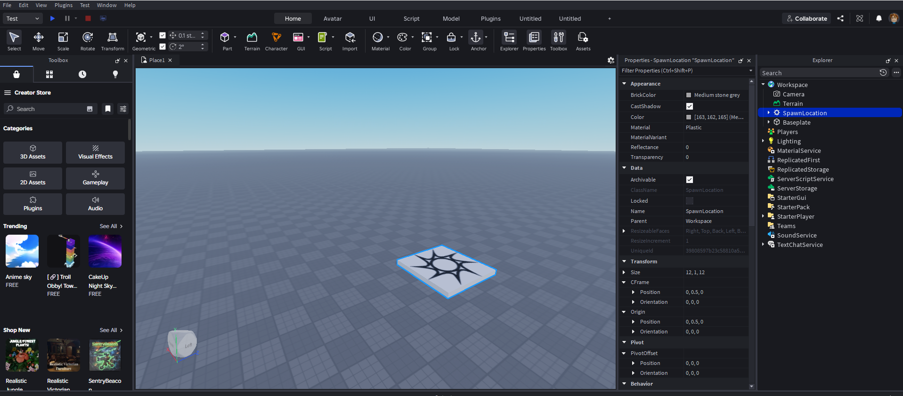

🎯 Цели занятия
- Узнать, что такое Roblox и Roblox Studio
- Научиться безопасно пользоваться аккаунтом
- Освоить управление персонажем и камерой
- Запустить Roblox Studio и увидеть свой первый мир
| Этап занятия | Время | Что делаем |
|---|---|---|
| Повторение: мышь и клавиатура | 10 мин | Быстро вспоминаем прошлое занятие |
| Что такое Roblox и Roblox Studio | 15 мин | Разница между игрой и редактором |
| Безопасность в интернете | 10 мин | Правила и аккаунт |
| Управление персонажем и камерой | 25 мин | Пробуем зайти в игру |
| Первый запуск Roblox Studio | 25 мин | Открываем редактор, New Baseplate |
| Опрос и итоги | 5 мин | Проверяем себя |
| Итого | 90 мин | — |
1 Roblox и Roblox Studio — в чём разница?
Roblox — это огромная платформа с миллионами игр, созданных обычными людьми, — точно так же, как ты сейчас учишься! Roblox Studio — это бесплатная программа-редактор, в которой мы будем строить свои собственные миры и писать код на языке Lua, чтобы оживлять их.
| Roblox (плеер) | Roblox Studio (редактор) | |
|---|---|---|
| Для чего | Играть в готовые игры | Создавать свои игры |
| Что видно | Только результат | Explorer, Properties, скрипты |
| Кто использует | Любой игрок | Разработчики (это будешь ты!) |

Безопасность в интернете — важные правила
1. Никогда не говори незнакомым людям свой настоящий адрес, номер телефона, фамилию или номер школы.
2. Пароль от аккаунта — секрет даже от друзей. Придумай пароль из букв и цифр, который никак не связан с твоим именем.
3. Если кто-то в игре пишет странные или неприятные вещи — не отвечай и сразу расскажи взрослому.
4. Все настройки аккаунта (почта, возраст) заполняет вместе с тобой родитель.
2 Управление персонажем и камерой
Когда ты заходишь в игру Roblox, твой герой ходит по чётким командам с клавиатуры и мыши:
| Клавиша / действие | Что делает персонаж |
|---|---|
W | Идёт вперёд |
A / D | Идёт влево / вправо |
S | Идёт назад |
Space | Прыгает |
| Движение мыши | Поворачивает камеру (обзор) |
Shift (в некоторых играх) | Идёт медленнее (крадётся) |
А теперь — камера в Roblox Studio
Внутри редактора мы не играем персонажем, а «летаем» камерой над своим миром, как режиссёр дрона:
| Действие | Как сделать |
|---|---|
| Оглядеться | Зажать правую кнопку мыши (ПКМ) и двигать мышь |
| Полетать вперёд/назад/в стороны | Зажать ПКМ + клавиши W A S D |
| Подняться / опуститься | Зажать ПКМ + Q / E |
| Приблизить / отдалить | Колёсико мыши |

🔑 Установи соответствие
Выбери для каждой клавиши правильное действие (персонаж в игре):
🔒 Правила безопасного аккаунта
Выбери все правильные действия:
🎮 Тренажёр: камера в Studio
Что нужно сделать, чтобы оглядеться в Roblox Studio?
💭 Рефлексия
Нажми на вопрос — Алиса ответит тебе прямо сейчас!
Просто скажи: «Алиса, как управлять камерой в Roblox Studio?»
🛠️ Практическое задание: Знакомство с миром Roblox Studio

На следующем уроке мы подробно разберём интерфейс Roblox Studio – все окна, панели и вкладки. Ты узнаешь, где находится Explorer, Properties, Toolbox и как ими пользоваться. А ещё мы создадим свой первый объект!
📸 А пока – вот скриншот интерфейса.
📝 Проверь себя
1. Что такое Roblox Studio?
2. Какая клавиша заставляет персонажа прыгнуть?
3. Как вращать камеру в Roblox Studio?
4. Можно ли сообщать незнакомцам в игре свой настоящий адрес?
5. Какой шаблон выбираем для чистого нового мира?
6. Для чего нужна клавиша Shift в некоторых играх?
7. Как подняться камерой в Roblox Studio?
8. Где в Roblox Studio можно найти окно Explorer?